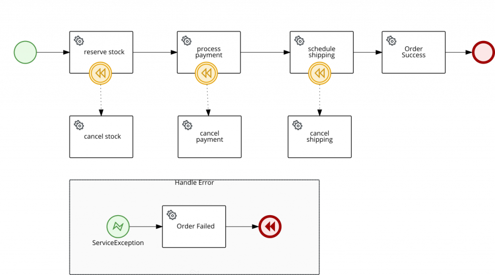
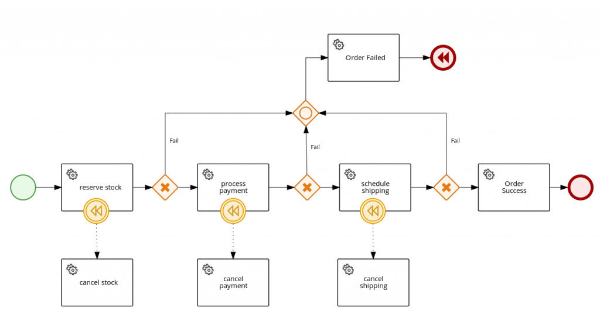

SAGA PATTERN WITH PROCESSES AND KOGITO – PART 2
Order Fulfilment Process example
In part1 it was described Saga pattern and how Kogito could be used as the orchestrator, also known as Saga Coordinator Executor (SEC).
This post will cover an example of the Order Fulfilment implementation on the top of Kogito processes using bpmn2, which is placed in the repository, to orchestrate all the steps and compensations to be executed in case of errors during the execution. The most important part of both examples is the usage of the compensation flow feature from Kogito process engine, which controls all steps that were executed and might be compensated, in a stateful manner, this means the Saga workflow can be long-lived, based on continuation, containing wait states on each step, but for simplicity, this example shows the Saga as a request-response aka straight-through process, described in more details in [KIELive#52] Stateless microservices with processes and decisions.
In a Saga process, the compensations can be represented by using boundary Intermediate Catching Compensation Events attached to the respective step to be compensated, for instance, Cancel Payment should be attached to the Process Payment.
All steps and compensations for stock, payment, and shipping should be executed to confirm or cancel an order and are defined using Service Tasks, represented by Java classes present in the project using CDI for dependency injection in Kogito runtime, more details on this example.
Let’s cover two different approaches to design the Saga workflow for the order fulfillment example:
Error handling with error events
In this approach, it was used error events, that are thrown from the service tasks execution as Java Exceptions, where each service task represents a step of the Saga execution. All errors are caught using an event subprocess containing an error start event to handle the error until the end of the subprocess execution where the compensation flow is triggered, with the usage of an end compensation event.

Data-driven flow with gateways
Within this approach, all paths in the workflow either success or error were chosen using the content of the response from each service task execution with the usage of exclusive gateways, in this scenario no error events or exceptions were used.
Given an error in response data, the compensation flow is triggered using an end compensation event. An inclusive gateway was used just for convenience to centralize the call to the order service, indicating the order has failed.

Examples usage
The interaction with the application was based on REST APIs, generated out-of-the-box by Kogito to interact with the process which is orchestrating the Saga.
The start point is to submit a request responsible to create a new order with a given orderId, this could be any other payload that represents an order resource, external to the process, but for the sake of simplicity, in this example, it will be based on an id that could be seen as a correlation to client starting the Saga.
The output of each step is represented by a Response object that contains a type, indicating success or error and the id of the resource that was invoked in the service, for instance, for payment, it represents the payment id, but this could be any kind of response depending on the implementation of each service. In the case of the Error handling example, instead of a response indicating an error, a Java exception is thrown from the service.
Running and testing the example:
mvn clean package java -jar target/quarkus-app/quarkus-run.jar
Creating a new Sucess Order
POST /order OR /order_saga_error
{
"orderId" : "03e6cf79-3301-434b-b5e1-d6899b5639aa"
}
The response for the main request is returned with attributes representing the response of each step execution, either success or failure. The orderResponse attribute indicates if the order can be confirmed by the client starting the Saga process, in case of success or canceled, in case of error.
{
"id": "df3c9c1e-8af4-4458-9a48-e2ab6f8944ed",
"stockResponse": {
"type": "SUCCESS",
"resourceId": "b66149ab-118c-42f2-ae0d-01501425e597"
},
"paymentResponse": {
"type": "SUCCESS",
"resourceId": "857d90e6-a607-4d42-ba41-594b92ed5ee6"
},
"orderId": "03e6cf79-3301-434b-b5e1-d6899b5639aa",
"orderResponse": {
"type": "SUCCESS",
"resourceId": "03e6cf79-3301-434b-b5e1-d6899b5639aa"
},
"shippingResponse": {
"type": "SUCCESS",
"resourceId": "6b2af61d-e016-4ac4-a30a-ce0d2c0b332e"
}
}
In the console executing the application, you can check the log with information on the executed steps, that come from java service classes.
2022-02-24 14:09:48,415 INFO [org.kie.kog.StockService] (executor-thread-0) Reserve Stock for order 03e6cf79-3301-434b-b5e1-d6899b5639aa 2022-02-24 14:09:48,417 INFO [org.kie.kog.PaymentService] (executor-thread-0) Process Payment for order 03e6cf79-3301-434b-b5e1-d6899b5639aa 2022-02-24 14:09:48,418 INFO [org.kie.kog.ShippingService] (executor-thread-0) Schedule Shipping for order 03e6cf79-3301-434b-b5e1-d6899b5639aa 2022-02-24 14:09:48,420 INFO [org.kie.kog.OrderService] (executor-thread-0) Order Success for order 03e6cf79-3301-434b-b5e1-d6899b5639aa
Simulating errors to activate the compensation flows
To make testing the process easier it was introduced an optional attribute failService that indicates which service should respond with an error. The attribute is basically the simple class name of the service.
POST /order OR /order_saga_error
{
"orderId": "03e6cf79-3301-434b-b5e1-d6899b5639aa",
"failService" : "ShippingService"
}
Response example:
{
"id": "9333f775-3b19-4fe4-abb0-cdd23911b239",
"stockResponse": {
"type": "SUCCESS",
"resourceId": "305f4ab6-4072-4786-a2a9-7ec8a52c4bed"
},
"paymentResponse": {
"type": "SUCCESS",
"resourceId": "f98b16a9-ff44-4c81-be27-df732a8c5473"
},
"orderId": "03e6cf79-3301-434b-b5e1-d6899b5639aa",
"orderResponse": {
"type": "ERROR",
"resourceId": "03e6cf79-3301-434b-b5e1-d6899b5639aa"
},
"shippingResponse": {
"type": "ERROR",
"resourceId": "4cc49235-7236-45cf-8cd8-87b5cb916f1d"
}
}
In the console executing the application, you can check the log with the executed steps.
2022-02-24 14:07:40,980 INFO [org.kie.kog.StockService] (executor-thread-0) Reserve Stock for order 03e6cf79-3301-434b-b5e1-d6899b5639aa 2022-02-24 14:07:40,982 INFO [org.kie.kog.PaymentService] (executor-thread-0) Process Payment for order 03e6cf79-3301-434b-b5e1-d6899b5639aa 2022-02-24 14:07:40,983 INFO [org.kie.kog.ShippingService] (executor-thread-0) Schedule Shipping for order 03e6cf79-3301-434b-b5e1-d6899b5639aa 2022-02-24 14:07:40,985 INFO [org.kie.kog.OrderService] (executor-thread-0) Order Failed for order 03e6cf79-3301-434b-b5e1-d6899b5639aa 2022-02-24 14:07:40,986 INFO [org.kie.kog.ShippingService] (executor-thread-0) Cancel Shipping for order 4cc49235-7236-45cf-8cd8-87b5cb916f1d 2022-02-24 14:07:40,988 INFO [org.kie.kog.PaymentService] (executor-thread-0) Cancel Payment for payment f98b16a9-ff44-4c81-be27-df732a8c5473 2022-02-24 14:07:40,989 INFO [org.kie.kog.StockService] (executor-thread-0) Cancel Stock for order 305f4ab6-4072-4786-a2a9-7ec8a52c4bed
It is important to mention that there are more ways to design a Saga using processes, in this post, it was covered two options to achieve a similar functionality given the use case of this example.
TO BE CONTINUED…
The 3rd blog post will demonstrate how to implement the same order fulfillment Saga using Serverless Workflow specification on the top of kogito for the orchestrator, stay tuned.